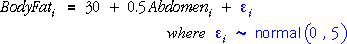

Importance of zero slopes
It is of particular importance to ask whether both explanatory variables are needed in the model. If a variable is unimportant, its slope parameter will be zero, so we are interested in testing the two pairs of hypotheses
 and
and 
Test statistics
The test statistics for these two tests are based on the two parameter estimates and the same estimates of their standard deviations that were used to obtain confidence intervals (the standard errors of the estimates). For example, the test statistic for β1 is

P-values
If the null hypotheses are true, the two test statistics have t distributions with (n - 3) degrees of freedom. The p-values for the tests are therefore the tail-areas of this t-distribution, as illustrated in the diagram below.
Simulation to illustrate calculations
In order to show how the p-values are calculated, we will generate data from a model that explains percentage body fat in terms of abdomen circumference. We also record telephone numbers (last two digits) for the individuals as a second explanatory variable that is unrelated to body fat.

A single sample from this model is shown in the diagram below with the least squares plane.
The diagram shows the test statistics for testing whether the coefficients of the two potential explanatory variables are zero.
Take a few samples and observe that for most data sets we would conclude that there is strong evidence that the variable Abdomen is needed in the model, but that there is little evidence of the need for the variable Phone no.
Examples
The diagram below shows the calculations for four real data sets. Read the conclusions carefully.
Pay particular attention to the conclusion for the Catheter length data set above. Even though both p-values are large, you should not conclude that neither variable is needed to predict catheter length. It is reasonable to drop either one of the variables (since their p-values are both greater than 0.2) but not necessarily both variables together.
The next section of CAST explains this problem with the interpretation of the two t-tests in more detail — it is related to the high correlation of the two explanatory variables.